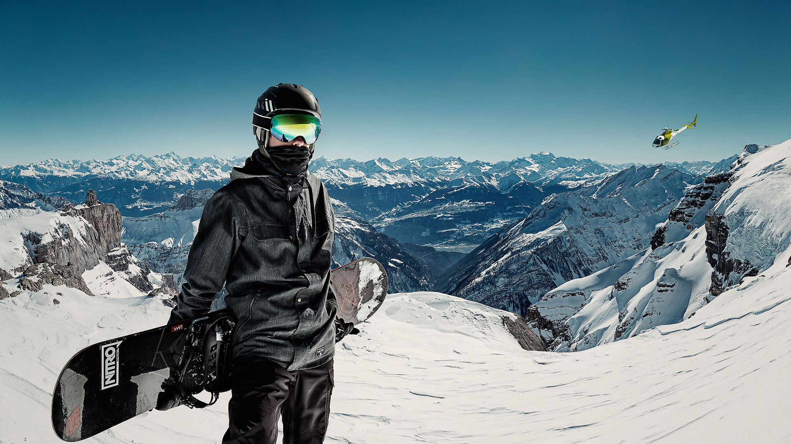

По-настоящему счастливым меня делают три
«С» — свобода, скорость, сноуборд.
Средняя скорость при катании на сноуборде может составлять
от 50 до 90 км/ч. Скоростной рекорд принадлежит Даррену Пауэллу, который в 1999 году смог
разогнаться на сноуборде до скорости 201 км/ч.
Рекорд самого продолжительного катания на сноуборде принадлежит Томми Макмину,
который в 1988 году катался на протяжении 24 часов. За это время ему удалось скатиться
с горы 101 раз и проехать около 93 км.
Рекордный прыжок на сноуборде с трамплина совершил норвежец Мэдс Джонсон,
совершивший полет на 57 м с трамплина, на сооружение которого потребовалось около трех недель.
По утверждениям психологов, сноубордингу отдают предпочтение люди, которые больше нацелены
на познание окружающего мира с помощью этого вида спорта, чем на освоение технических приемов.
Когда сноубордист падает, единственная его защита — это руки.
Причём у профессионалов чаще всего возникают травмы рук и плечей,
а у новичков травмы запястья.